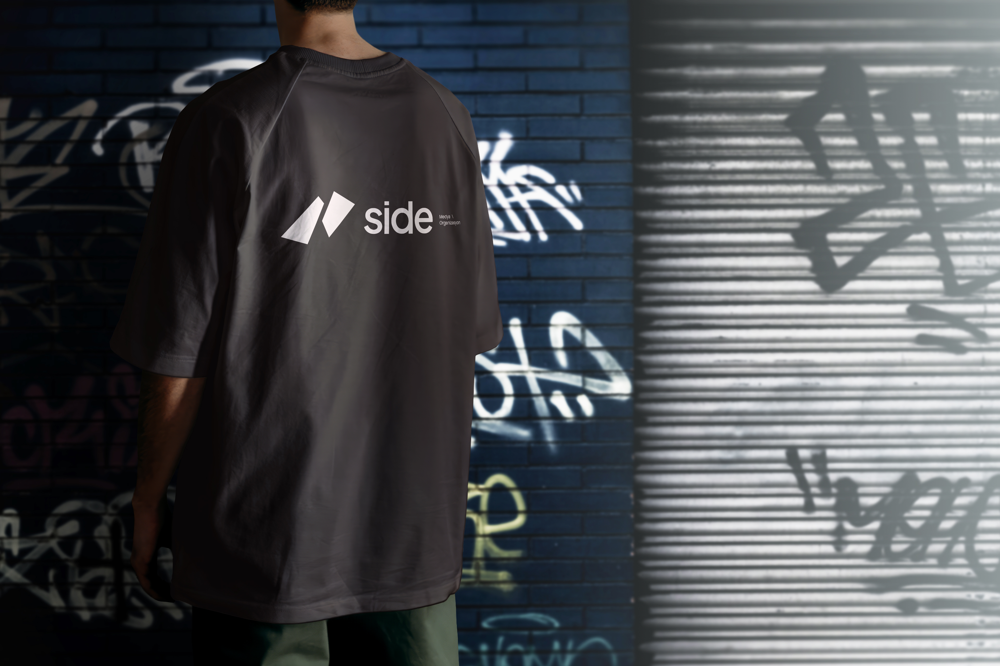

PROJE HAKKINDAÇalışmaya
Çalışmaya
yakından bakış.
Archix is a Professional Webflow Template for architecture websites. It can be easily used for construction, business,
- Şirket
- SEYSA MİMARLIK
- Hizmet
- İçerik Üretimi
Archix is a Professional Webflow Template for architecture websites. It can be easily used for construction, business, design, interior design, house design, building, building design, modern,

Archix is a Professional Webflow Template for architecture websites. It can be easily used for construction, business,